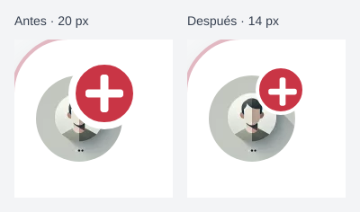
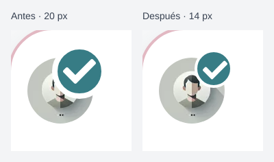
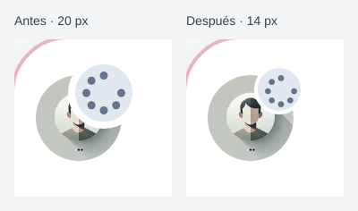
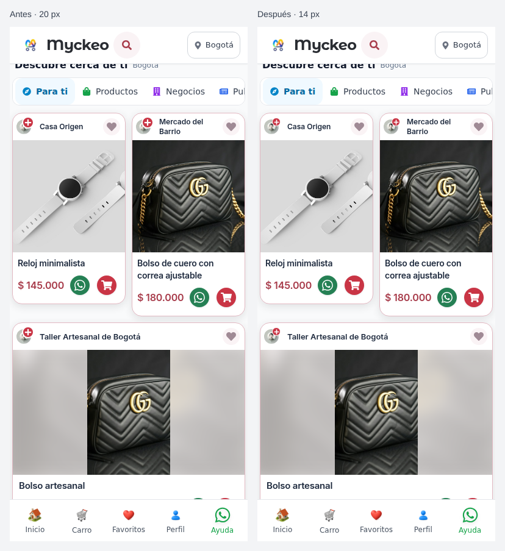
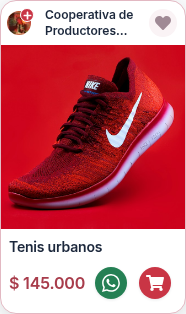

Diámetro exterior 14 px, halo blanco 1 px, icono/spinner 9 px. Avatar 24 px y área táctil 44 px sin cambios. Distintivo: 49,8 % dentro y 50,2 % fuera del círculo del avatar.





Capturas del componente productivo en Next.js con datos y respuestas sintéticos. Los PNG ampliados de 176 × 176 px corresponden al objetivo CSS de 44 × 44 px, capturado con deviceScaleFactor 4.
Medidas · Integridad de fuentes · Geometría · Estados y teclado